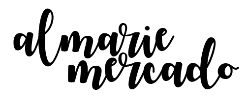

remembering you
03/01/2018
hd color video, 1080p, 0"3"12.
"tell a story, without telling a story" -- my video was originally supposed to be someone who goes into depression and eventually drives himself to commit suicide, but as i was editing my project and loss time to create more footage, i decided to change my theme to someone who lost their loved one due to a car accident.
"let us not be sad that they are gone, but be happy that they were there." -Doc from ZNation.
i was able to shoot all of my videos and pictures with my HTC One A9 phone. some of them are "square-sized" because they are shot with the app, Instagram. the beginning and the end of the video were "new" shots, whereas the rest of the footage are collected videos from 2014 until 2018. i was able to create this video using Adobe's Premiere Pro using crossfades and color adjustments, however, it was difficult for me to use the program since my Compaq laptop couldn't handle it.
the "message"
09/09/2019
hd color video, 1080p, 0"1"20.
"the 'message'" demonstrates my understanding of the different shots that could be achieved in video art. the film also reveals my capability of trying to "convey" a message through storytelling, though this is not a "major" project.
i was able to create this video, shooting scenes with my friend's, Joshua Nguyen, Canon Rebel T6. i not only used a tripod, but i also had some help from Josh to help record scenes that i wanted but couldn't take due to the fact that i was also my own "actor". as for how the video was edited, i explored Adobe's Premiere Pro to create:
- title & credits
- color correcting
- video transitions / crossfade
- audio transitions / crossfade
- changing audio gain
- and somewhat of an "L" cut.
(used Dell laptop to edit).
my definition of "video art"
09/15/2019
hd color video, 1080p, 0"2"30.
i discuss what i know about Video Art and how it has evolved throughout the years from the 1960s to 2019 (today). all in all, they seemed to have some type of performance tied in with an underlying or straight-forward message that deals with "controversial" topics such as feminism, the LGBTQ+ community, and racism. although, it also seemed as if they were simply just trying to entertain an awaiting audience. my overall definition of Video Art comes from experience, but also from certain lectures from this class and other classes.
in Adobe's Premiere Pro, i used many overlaying tools, texts, transitions, audio gain adjustment, video speed adjustment, zoom in, and even a PSD file to help create my final product. all videos were shot with a Canon Rebel T6 and a tripod. (used a Dell laptop & hand-built PC to edit.)
where we call home
09/29/2019 (edited 09/30/2019)
recyclables (cardboard boxes, plastic bags, plastic bottles, glass bottles, paper towels), videos (mapped according to projection), and music.
4'7" x 3" x 2'6"
our installation is based on a documentary that my partner, Jada Williams, has watched about what would happen if humans no longer existed on Earth; it explained how plants would “reclaim” the planet. we used “recyclables,” or man-made objects, to imitate a city-scape. we also projected videos of nature onto them to demonstrate the idea of plants inhabiting the Earth despite the remnants of what humans have left behind.
as mentioned before, we created our city-scape with recyclables and placed them rather randomly until we felt like they seemed cohesive. these recyclables were just "found objects" that we gathered from our homes. the videos that were projected onto the objects were shot with Android phones. in order to project the videos onto our city, we used a projector which we checked out from the Visual Resources Room in the Art Building and used TouchDesigner to figure out where the videos should align. we kept adjusting the placement of the videos while it projected on the objects until we got it "just right". the overall video of the project was shot by Jada on her Android phone and was edited in Premiere Pro to create the title and credits.
UNbroken
12/09/2019
HD Color Video, 1080P, 0"2"50
"UN-broken" tells a story about a girl who's insecurities about her "image" get to her head. She feels as if her weight is too much, that she's too short, and that she isn't pretty enough. Although on social media she appears happy with her life, behind the camera, she feels lost and trapped in her pessimistic world. She thinks everyone sees her insecurities as well and concludes that they all hate her for it. It isn't until the people she befriended tell her otherwise that she's beautiful no matter what she thinks. Her friends help her get out of the darkness she created, thus her accepting them as her new light. This video art is a reflection of how I felt about myself until I met friends that made me feel proud to be me and not matter about how I look. I wanted to show my experiences and how people can change one's thoughts on anything. It is the people that bring love to us and it is up to us to let them in and gladly accept their love. (Other "mentions" in the Credits).
i first came up with the idea as i was brainstorming how i could represent my newfound knowledge i acquired from my art 75 class. i then thought of artworks that i used as references. this led to the overall outcome of my storyboard for the project. with the help of friends and family, i was able to record multiple scenes and compile them together to create this successful art video. it was kind of difficult working with people i know because there were many times that we would just outburst in laughter. however, we managed to get the job done. i used a DLSR Canon Rebel T6 and my Samsung Galacy 10 to record everything. i then edited all the files into Adobe's Premiere Pro using cuts, transitions, color-correcting, and text.